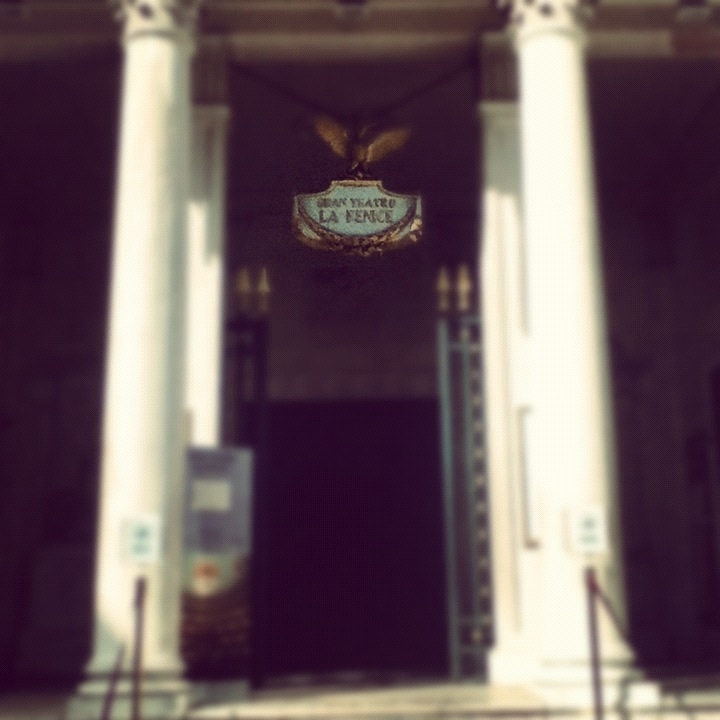

La Fenice
 Fenice, Teatro La Teatro lirico di Venezia, inaugurato nel 1792, in sostituzione del Teatro di San Benedetto, raso al suolo da un incendio. La costruzione fu realizzata da G.A. Selva. Le decorazioni interne di F. Fontanesio furono sostituite da quelle stile impero di G. Borsato durante la dominazione napoleonica, quando venne realizzata anche una loggia imperiale. Nel 1836 un incendio distrusse la sala e altri ambienti. I lavori di ricostruzione, diretti dai fratelli T. e G. Meduna, terminarono nel dic. 1837. La decorazione fu cambiata più volte fino al 1854, quando fu realizzata quella in lacca verde e oro ispirata al Settecento veneziano. La loggia imperiale fu sostituita nel 1866 da un palco reale con lo stemma sabaudo. Nel 1937 líedificio fu rinnovato da E. Miozzi per la parte architettonica e da N. Barbantini per quella decorativa. Il 29 genn. 1996 un devastante incendio distrusse l'intero teatro, che venne ricostruito su progetto di A. Rossi, seguendo il criterio di una rigorosa ricostruzione filologica per quanto riguarda la sala teatrale e gli ambienti di servizio (atrio, foyer, scalone, Sale apollinee), ma dotando di ogni innovazione tecnica la torre scenica e ristrutturando completamente le ali N (camerini, sale prove ecc.) e S (uffici e Sala nuova). Inaugurato nel dic. 2003 con una serie di concerti, il teatro ha regolarmente ricominciato la stagione lirica con La Traviata, diretta da L. Maazel, nel dic. 2004. (VEDI ENCICLOPEDIA TRECCANI)